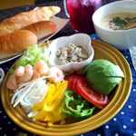

<!DOCTYPE html>
<html lang="zh-Hant-TW">

<head>
    <meta charset="UTF-8">
    <meta name="viewport" content="width=device-width, initial-scale=1.0">
    <title>篩選圖片</title>
    <link rel="stylesheet" href="./jQuery/css/textslider.css">
    <style>
        a {
            color: black;
            text-decoration: none;
        }

        #wrapper {
            width: 800px;
            margin: 0 auto;
            text-align: center;
            padding: 60px 0;
        }

        #filterBtn {
            padding-bottom: 30px;

        }

        #filterBtn a {
            background-color: gray;
            padding: 10px 20px;
            margin: 10px;
            border-radius: 99px;

        }

        #filterBtn a.active {
            color: rgb(100, 32, 32);
            font-weight: bold;
            background-color: #ffecfb;
        }

        /* 列表樣式 */
        #filterList {
            width: 800px;
            text-align: center;
            margin: 0 auto;
        }

        #filterList ul li {
            width: 150px;
            float: left;
            margin: 5px;
        }

        #filterList ul li img {
            width: 150px;
        }
    </style>

    <!-- React Bable -->
    <script crossorigin src="https://unpkg.com/react@18/umd/react.development.js"></script>
    <script crossorigin src="https://unpkg.com/react-dom@18/umd/react-dom.development.js"></script>
    <script src="https://unpkg.com/@babel/standalone/babel.min.js"></script>

</head>

<main>
    <div id="root"></div>
    <script type="text/babel">
        // 撰寫JQuery
        // $(document).ready(function(){
        // });

        // 簡寫

        const { useEffect } = React;

        function App() {

            useEffect(() => {
                $(function () {
                    // 案扭區
                    let setFilter = $('#filterBtn');
                    // 按鈕區的超連結元素
                    let filterBtn = setFilter.find('a');
                    // 取得ALL按鈕(預設選取狀態)
                    let btnAll = $('.allItem');
                    // 取得所有列表中的元素區
                    let setList = $('#filterList');
                    // 取得列表中的li
                    let filterList = setList.find('li');

                    // 當任一按鈕被左鍵一下時
                    filterBtn.click(function () {
                        console.log('click');
                        /* 檢查是否沒有被點選 */
                        if (!($(this).hasClass('active'))) {
                            // 取出類別名稱給filterClass變數
                            let filterClass = $(this).attr('class');
                            // 使用each方法 篩選列表中一樣的類別名稱
                            filterList.each(function () {
                                if ($(this).hasClass(filterClass)) {
                                    // 有找到
                                    $(this).css({ display: 'block' });
                                } else {
                                    // 沒找到
                                    $(this).css({ display: 'none' });
                                }

                            });
                            // 清除按鈕上的active
                            filterBtn.removeClass('active');
                            // 將目前點選的a加上 .active
                            $(this).addClass('active');

                        }
                    });
                    // 全部顯示
                    btnAll.click(function(){
                        filterList.each(function(){
                            $(this).css({display:'block'});
                        })
                    });
                    // 載入頁面時, 讓ALL為點選狀態
                })
            }, []);
            return (<>
                <div id="wrapper">
                    {/* 按鈕區 */}
                    <div id="filterBtn">
                        <a href="#" className="allItem">All</a>
                        <a href="#" className="cats">CATS</a>
                        <a href="#" className="food">FOODS</a>
                        <a href="#" className="view">VIEW</a>
                    </div>
                    {/* 圖片列表區 */}
                    <div id="filterList">
                        <ul>
                            <li className="cats"></li>
                            <li className="cats"></li>
                            <li className="cats"></li>
                            <li className="cats"></li>
                            <li className="cats"></li>
                            <li className="cats"></li>
                            <li className="food"></li>
                            <li className="food"></li>
                            <li className="food"></li>
                            <li className="food"></li>
                            <li className="food"></li>
                            <li className="view"></li>
                            <li className="view"></li>
                            <li className="view"></li>
                            <li className="view"></li>

                        </ul>
                    </div>
                </div>
            </>)
        }

        ReactDOM
            .createRoot(document.querySelector('#root'))
            .render(<App />)
    </script>
</main>
<!-- 可以使用套件給的 or官網的最新版 但只能擇一使用 -->
<script src="https://code.jquery.com/jquery-3.7.1.min.js"
    integrity="sha256-/JqT3SQfawRcv/BIHPThkBvs0OEvtFFmqPF/lYI/Cxo=" crossorigin="anonymous"></script>

</body>

</html>
<link rel="stylesheet" href="../images/trst1.jpeg">
<link rel="stylesheet" href="./篩選圖片素材/images/food1.jpg">